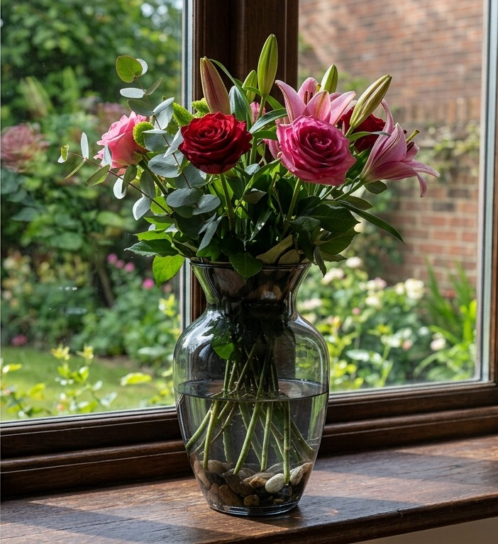
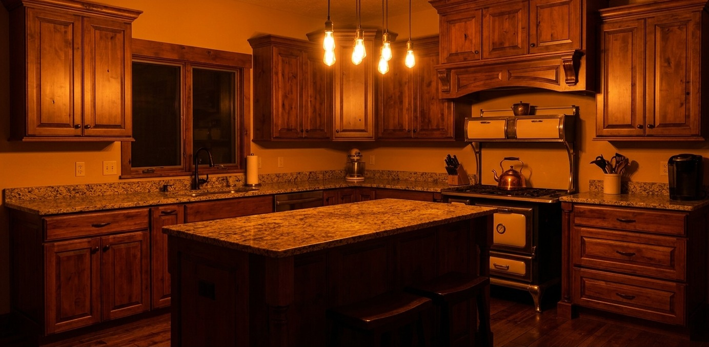
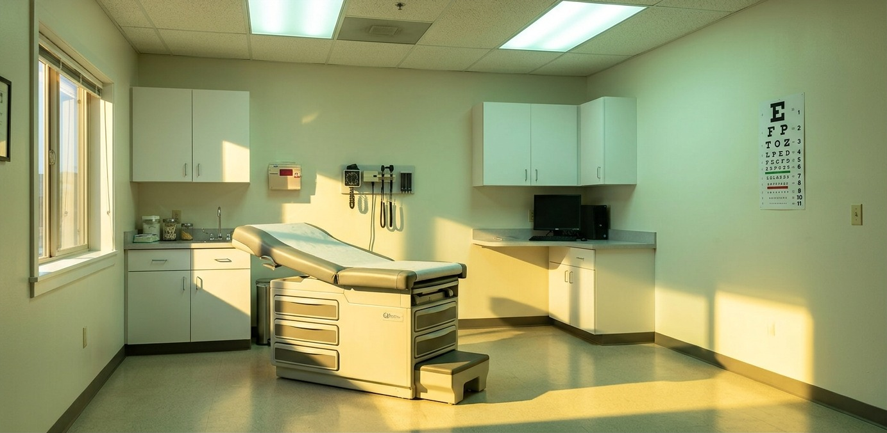
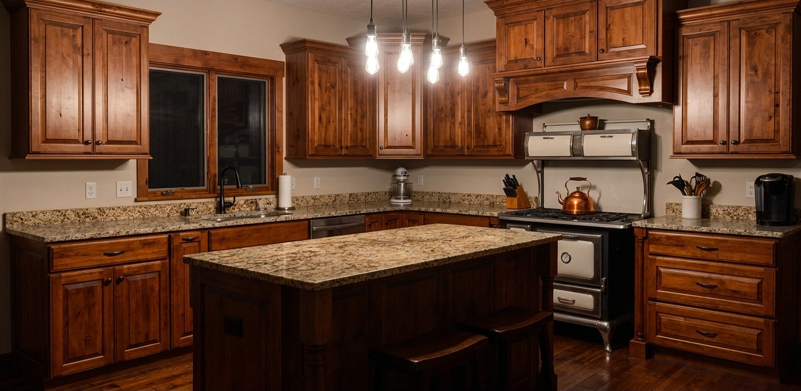
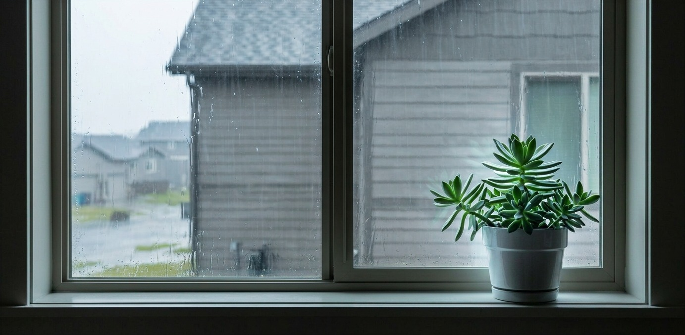
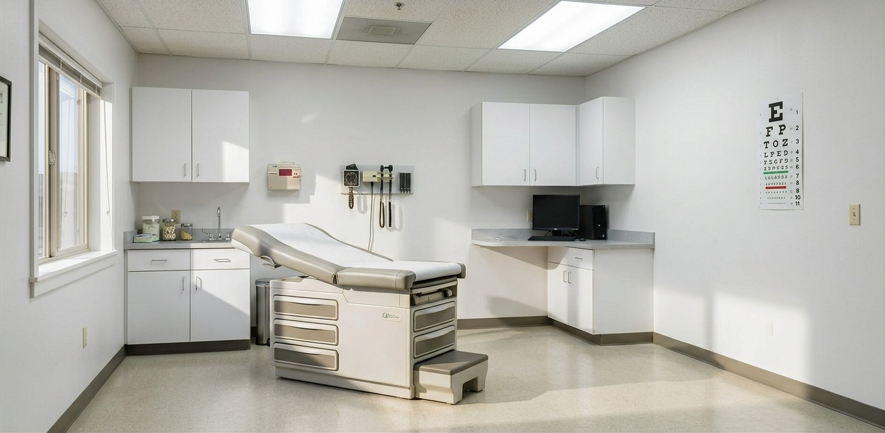

Built to be repeated.
Two lighting modes, one fixed working distance, and the same framing every session. The photograph you take today can be put beside the one you take in six months and mean something.
Read the fine print.
A resolution check, not a clinical comparison: the same printed target, the same working distance, the same session. Drag the divider, Flacara on one side, a DermLite DL4 on the other, and judge the optical detail for yourself.
- Flacara resolves
- ≈16 µm
- Unaided eye1
- ≈100 µm
- DermLite DL4, this target
- Indistinguishable
No added lens. That resolving power comes from the phone's own sensor and the software behind it. Line pairs on this target resolve more than six times finer than what the unaided eye can pick apart at normal reading distance, from a housing with no glass of its own.
This is a resolution comparison on a printed test target, not a clinical or diagnostic comparison, and it does not imply that Flacara is a dermatoscope or any other kind of medical device. Image quality was comparable side by side; that has not been quantified beyond this target, and these are single frames from one session, not a study. DermLite is a trademark of its owner and there is no affiliation.
1 ≈0.1 mm (100 µm) is the commonly cited limit for high-contrast detail resolved by the unaided eye at a normal 25 cm reading distance, about 1 arc-minute of visual angle at 20/20 acuity.
Two lights, one press.
Unpolarized light shows the surface: scale, texture, the way it catches. Cross-polarized light cuts the surface glare and shows what sits under it. One button alternates them without moving the housing, so both frames share a single geometry.

It finds the frame for you.
Point the housing at a spot you have photographed before and the app registers the new frame against the old one, correcting for rotation and offset before the shutter fires. You are not asked to hold still and guess.
Colour you can trust twice.
The housing supplies its own light, so the room stops mattering. A known reference in the frame lets the app normalise every capture to the same white point, which is the only way a colour difference between two dates means a difference in the skin rather than a difference in the bulb overhead.





Find it again.
Every capture is pinned to a place on the body, not to a filename. Months later the phone's camera shows you where a spot was, in AR, on the skin in front of you, and takes the follow-up from the same position.
Reserve one.


The specialist configuration
The h1 with a machined aluminium top plate, both lighting modes, and the alignment and tracking features above. It seats over the phone camera array; there is no added lens, which is why it costs what it does.
| Lighting | Polarized · Unpolarized |
|---|---|
| Detail | ~40 µm |
| Optics | Phone sensor and software |
| Top plate | Machined aluminium |
| Charging | USB-C |
| Phone | iPhone |
Flacara is a camera accessory. It is not a medical device, it is not cleared or approved by the FDA, and it does not diagnose, screen for, or assess any condition. Nothing it produces is a medical opinion. Talk to a professional about anything on your skin that concerns you.
Frequently asked questions
When does it ship?
Units are between prototype and pilot. Reserving puts you in the first batch and tells us how many to build; we will email a date before anything is charged.
Am I being charged now?
No. Reserving takes an email address and nothing else. No card, no deposit.
How is the aluminium edition different?
It is the same device with a machined aluminium top plate instead of the standard one. Same lighting, same detail, same software.
Does it work with my phone?
iPhone at launch. The housing seats over the camera array rather than clipping to a single lens, so support is per phone body and we will publish the list.
Where do my photographs go?
They stay on your phone unless you export them. We will publish the full data terms before the first unit ships.